Overview
Using AttachPoint, you can create "attach points" on the frames of your sprites. You can then export/copy the code (which will contain the coordinates) and use it in your game to attach an object to another.
Workflow
- Import sprite sheet(s)
- Set up attach points and their angles
- Export code
When you export, it asks you the name of the state/sprite, which is used for the exported array's name.
You can restore an export with the 'Restore Export' button.
Export Code
The 'Export Code' button will export/copy a nested array structure to your clipboard, in this format:
// 'State' is the name you enter while exporting
State = [];
// First sprite
State[0] : [
Frame0 : [x, y, angle],
Frame1 : [x, y, angle],
Frame2 : [x, y, angle],
// More frames...
];
// Second sprite
State[1] : [
Frame0 : [x, y, angle],
Frame1 : [x, y, angle],
Frame2 : [x, y, angle],
// More frames...
];
// More sprites...
The exported coordinates will be relative to the Origin point selected in the program.
Controls
Mouse wheel: Zoom
Can use Alt+Mouse for this
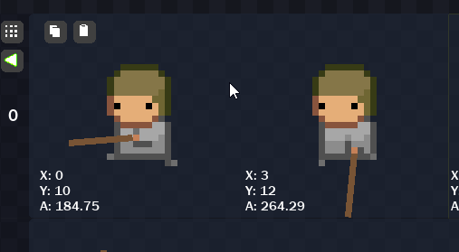
Middle-click drag: Pan
Can use Shift+Mouse for this
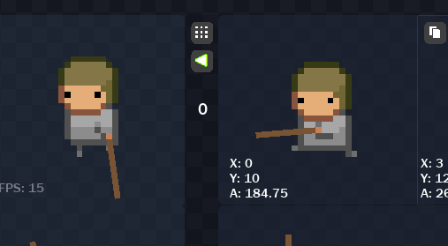
Middle-click: Focus on a frame
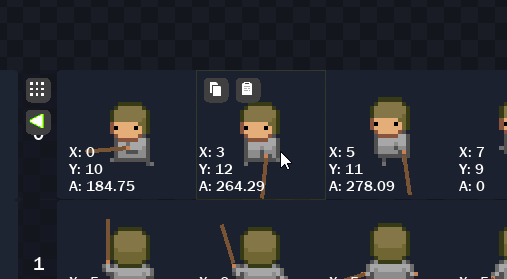
Left mouse button: Modify attach point position
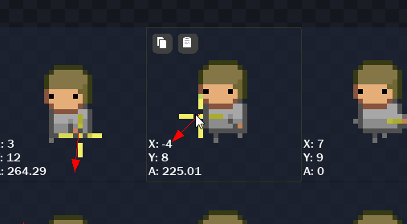
Right mouse button: Modify attach point angle
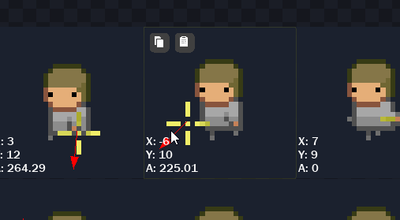
Arrow keys: Navigate frames
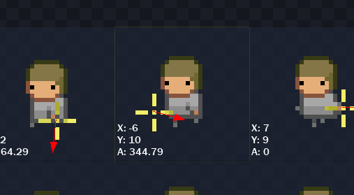
Restore Export
The 'Restore Export' button will load any previously exported animations.
The name that you entered while exporting an animation, will need to be entered in order to load it back.
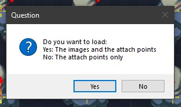
As you can see, you have the option to either import everything from the export (including all sprites), or just the attach points.
This means that you can import attach points saved from one sprite, onto another, if you select the second option.
Animation Preview
You can click on the 'Play Animation' button on a sprite to preview its animation:
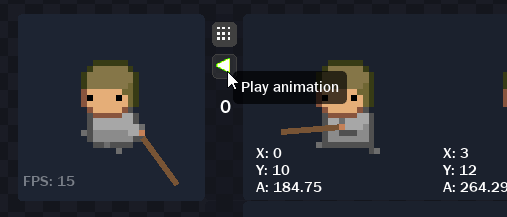
You can also change the speed of a sprite animation:
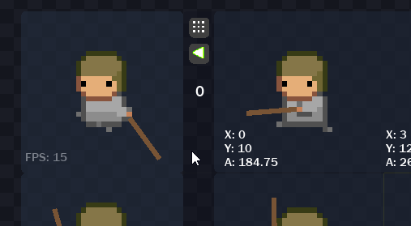
Preview Image
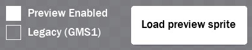
By default, a crosshair with an arrow will appear at your attach points:
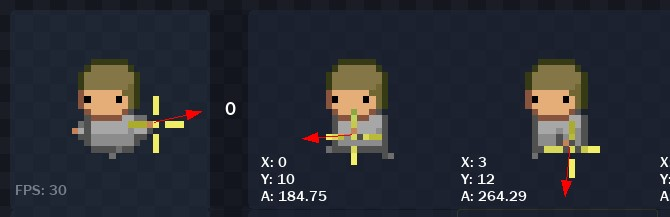
You can import a preview sprite which will appear instead of the default crosshair:
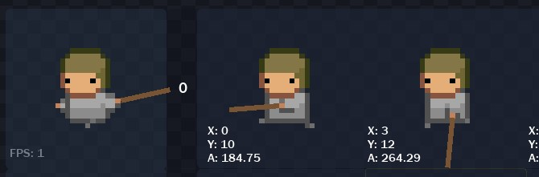
Origin
You can set the origin of the base sprite through the origin menu.
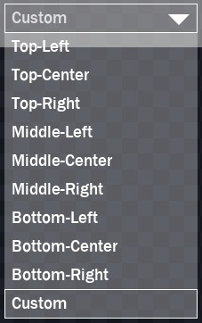
The exported attach point coordinates will be relative to this origin point, and those coordinates can be seen on each frame at the bottom-left corner, along with the angle:
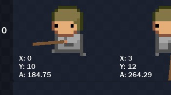
This feature is not available in the demo
In most cases, the origin set in AttachPoint will need to match the origin of the sprite in your game project.
You can select the 'Custom' option to set an origin point manually:
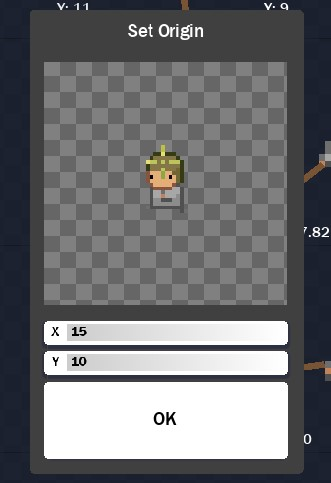
Relative Angles
If you import multiple sprites, where each sprite is the same character, but in a different direction, then you can use the 'Relative Angles' feature to automatically set the base angle of each sprite, starting from the right.
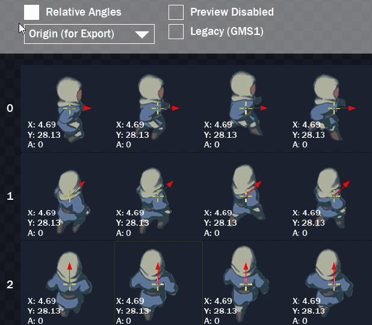
Note that this is only visual, and does not affect the angles exported for each frame. It is expected that the base angle will be added to the exported angle in your game project.
Legacy Support
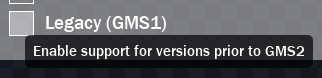
GameMaker Studio 1.x does not support array literals, which is why the Legacy Support mode was created.
Exporting with Legacy Support enabled produces code in a format that works without requiring array literal support.
It's been created and tested specifically for GameMaker Studio versions prior to 2.x.
FAQ
What kinds of sprite sheets does AttachPoint support?
You need to import an horizontal strip/sheet image for animation. GIFs are not supported.
What if my animation frames are separate images, not a sheet?
Loading frames as separate images will treat them as separate sprites, not an animation.
However, you can still make that work, as they'll be exported as separate arrays with one frame each.
But you won't be able to preview the animation inside the program -- you need a horizontal strip image for that.
Credits
Thanks to Samuel Venable for his DLLs!